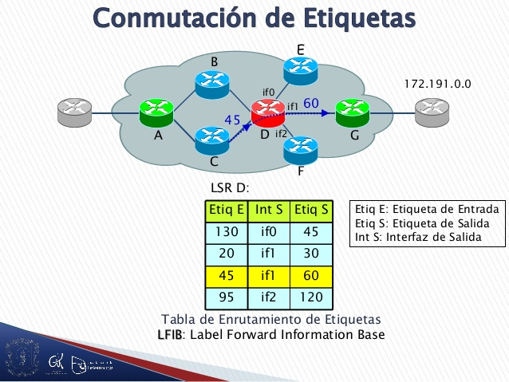
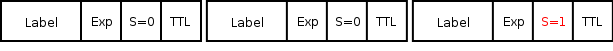

Multiprotocol Label Switching
Multiprotocol Label Switching or MPLS (Multiprotocol Label Switching) is a standard data transport mechanism created by the IETF and defined in RFC 3031. It operates between the data link layer and the network layer of the OSI model. . It was designed to unify the data transport service for circuit-based and packet-based networks. It can be used to carry different types of traffic, including voice and IP packet traffic.MPLS replaced Frame Relay and ATM as the technology of choice for carrying high-speed data and digital voice on a single connection. MPLS not only provides greater reliability and performance, it can often reduce transportation costs through increased network efficiency. Its ability to prioritize packets carrying voice traffic makes it the perfect solution for carrying voice over IP or VoIP calls.
MPLS (Multiprotocol Label Switching)
Virtual circuits in IP networks, on which it introduces a series of improvements:
- Virtual private networks.
- Traffic engineering.
- Failure protection mechanisms and more.
- Quality of Service (QoS) Support
- Multiprotocol support
- Establishment of Classes of Service (CoS).
Basic characteristics and operation
MPLS technology is a solution for multiprotocol switching:
- It introduces a connection-oriented structure in networks that were not originally connection-oriented (IP networks).
- It seamlessly integrates layer 2 (data link) and layer 3 (network) of the OSI model, combining routing control functions with effective switching
- Optimizes routing, notably reducing algorithm complexity.
- Maintains a state of communication between two nodes.
- It allows to introduce QoS in IP networks.
- Optimize the establishment of tunnels in VPNs.
MPLS architecture
Elements
- LER (Label Edge Router or labeling border router): element that starts or ends the tunnel (extracts and introduces headers). That is, the input / output element to the MPLS network. There are both incoming and outgoing routers on the network. Both are often referred to as a border router since they are located at the ends of the MPLS network.
- LSR (Label Switching Router or label switching router)
- LSP (Label Switched Path or route exchange by label) generic name of an MPLS path (for certain traffic or FEC), that is, of the MPLS tunnel established between the ends. Note that an LSP is unidirectional.
- LDP - Label Distribution Protocol - A protocol for distributing MPLS labels between computers on the network
- FEC (Forwarding Equivalence Class): name given to traffic that is routed under a label. Subset of packets treated in the same way by the switch.
MPLS header
Where:
- Label or label (20 bits): is the value of the MPLS label.
- Experimental or Exp (3 bits): also called experimental bits. It appears as quality of service in other texts, and affects packet queuing and discarding. They are three bits used to identify the class of service.
- Stack or stack (S, 1 bit): used for hierarchical stacking of labels. When S = 0, it indicates that there are more labels added to the package. When S = 1, it is the last label in the hierarchy.
- Time to live or time-to-live (TTL, 8 bits), which has the same functionality as in IP. It is decremented in each router and when reaching the value of 0, the packet is discarded. Usually replaces the TTL field in the IP header.
MPLS Label Stack
MPLS works by appending a header to each packet. Said header contains one or more "tags", and the set of labels is called a stack or "stack". Each tag consists of four fields:
- 20-bit tag value.
- 3-bit Quality of Service (QoS) priority. Also called experimental bits.
- The "bottom" flag of the 1-bit stack.
- 8-bit Time to Live (TTL).